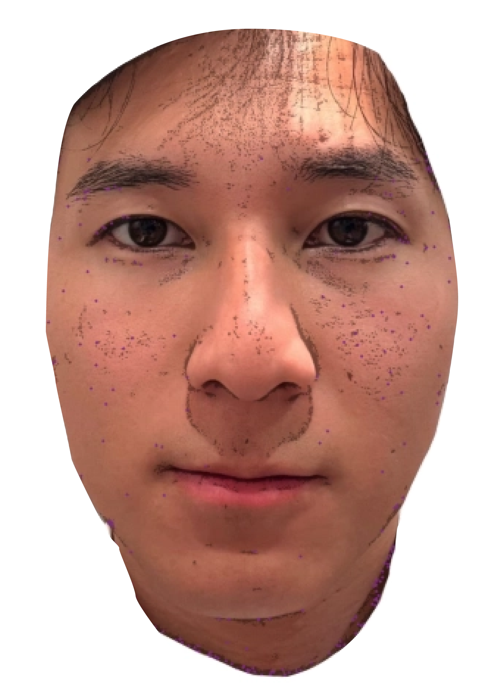
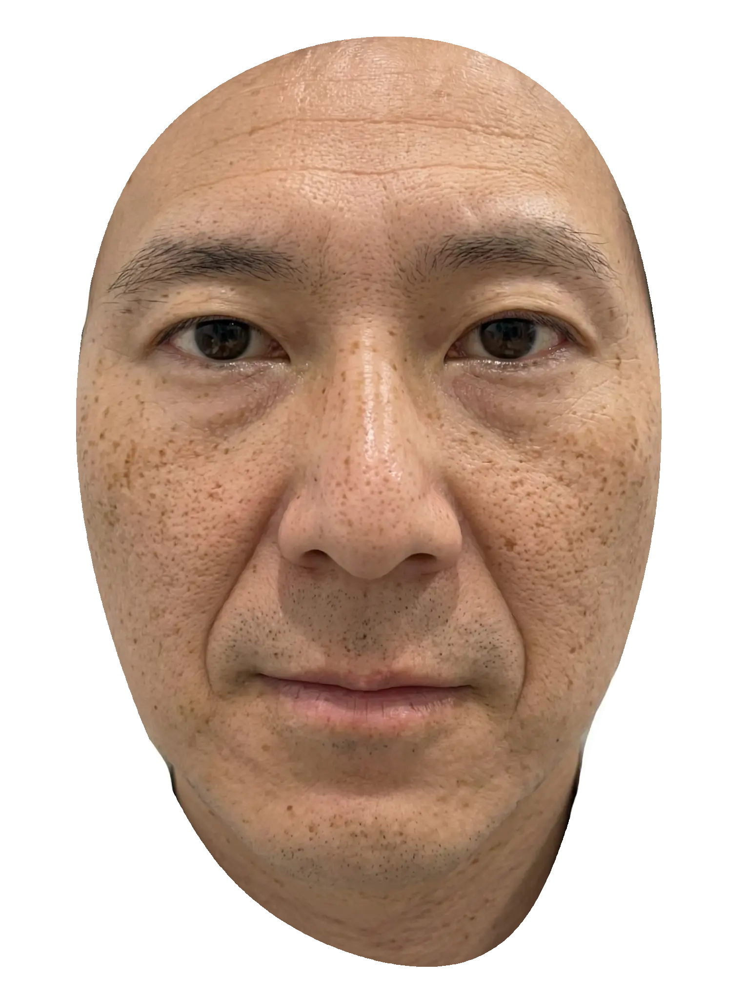
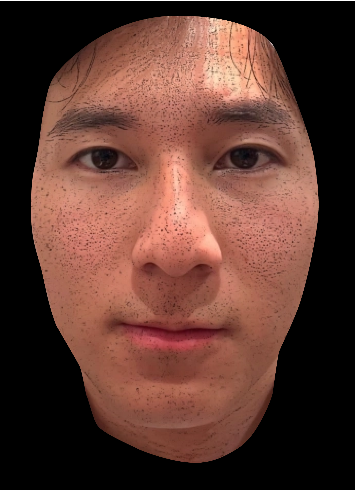
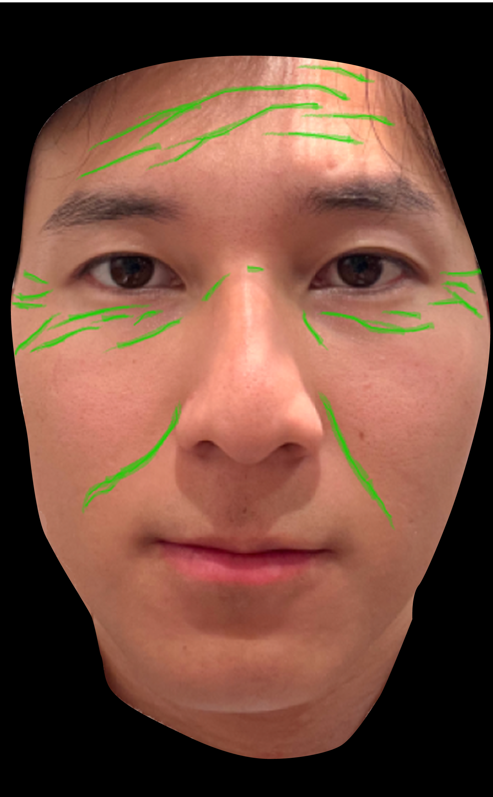
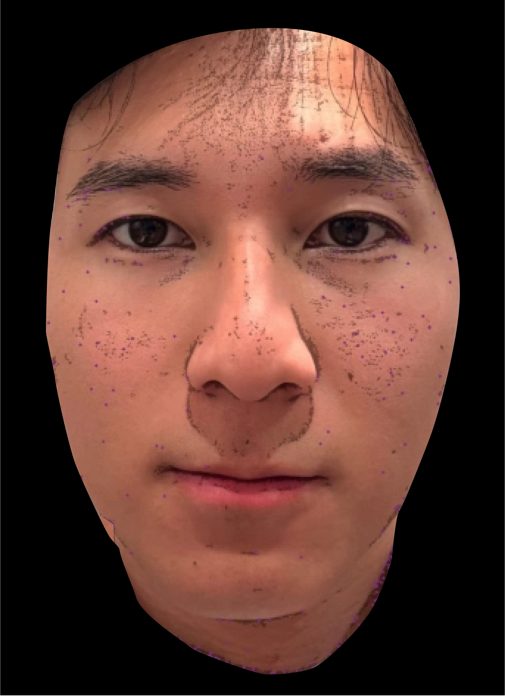
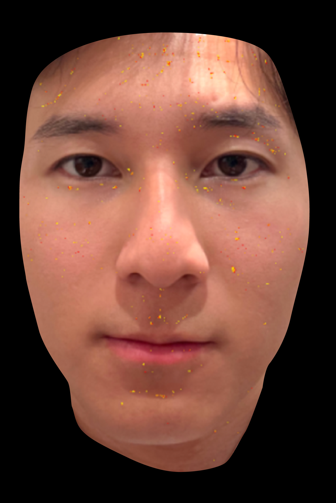
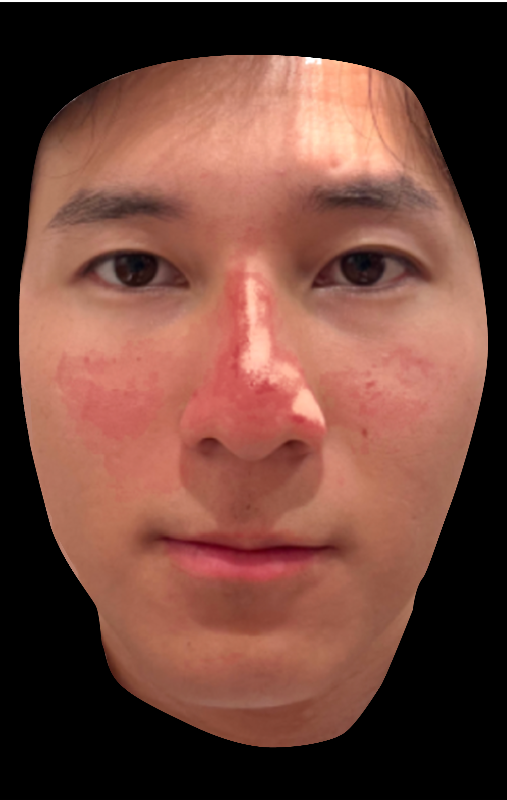

お悩みに基づく 肌診断レポート
2024年12月20日の肌データ

患者情報
気になるお悩み：シミ・くすみ
ダウンタイム：短め希望
施術経験：初めて
気になるお悩み：シミ・くすみ
ダウンタイム：短め希望
施術経験：初めて
施術を行わなかった場合の将来予測
現在の肌状態が続いた場合のシミュレーション
CURRENT現在
現在
+10 YEARS10年後

+10年後
+20 YEARS20年後

+20年後
※ 現在の肌データに基づく予測であり、実際の変化は生活習慣やケア内容により異なります。
肌の全体スコア
10の指標に基づく総合評価
Total Score
72/100
良好
あなたのスコア
同年代の平均
お悩みに基づく分析
シミ・くすみに関連する詳細な肌分析結果
気になるお悩み：シミ・くすみ
お伺いしたお悩みに基づき、肌の状態を多角的に分析しました。以下の結果をもとに、現在の肌コンディションに合った最適な施術プランをご提案いたします。
全体的にバランスの取れた肌状態ですが、シミ・くすみのスコアが他の項目に比べてやや低く、紫外線ダメージの蓄積が考えられます。ターンオーバーの低下により、メラニンの排出が追いついていない可能性があります。
項目別の詳細分析
画像解析による項目ごとの肌分析結果
📊 解析マップの見方
スコアの目安：数値が低いほど症状が軽く良好な状態です。各エリアの色分けで、緑＝良好 → 黄＝注意 → 赤＝要ケア
を示しています。解析マップでは各項目の検出結果を顔画像上にオーバーレイし、ケアの優先部位を視覚的に確認できます。
01シミ
シミ・隠れジミの分布パターンと深度を解析

元画像
解析マップ
シミ濃度
45/100
分布範囲
38/100
色ムラ
52/100
くすみ度
48/100
分析結果：頬骨の上部を中心に、紫外線性のシミが散在しています。目の下にはやや広範囲にくすみが見られ、メラニンの蓄積が確認されます。左右差はほぼなく、対称的な分布パターンです。シミの深さは比較的浅く、表皮レベルのものが中心のため、光治療やマイルドなピーリングでの改善が見込めます。
02シワ
シワの深度・分布・種類を解析

解析マップ
シワ深度
72/100
額のシワ
65/100
目尻のシワ
58/100
ほうれい線
60/100
分析結果：額に軽度の表情ジワが見られます。目尻の笑いジワは乾燥による小ジワ傾向がありますが、深いシワへの進行は見られません。ほうれい線は年齢相応の状態です。保湿ケアの強化とターンオーバー促進で改善が期待できます。
03テクスチャー
肌のキメ・質感・ハリの状態を解析

解析マップ
キメ細かさ
79/100
ハリ・弾力
68/100
なめらかさ
72/100
ツヤ
65/100
分析結果：キメの細かさは良好で、肌の基礎コンディションは安定しています。ハリ・弾力はやや低下傾向にあり、コラーゲンの産生促進が効果的です。保湿ケアの見直しで質感の改善が期待できます。
04毛穴
毛穴の開き・黒ずみ・詰まりの状態を解析

元画像
解析マップ
毛穴の開き
74/100
黒ずみ
68/100
詰まり
72/100
たるみ毛穴
60/100
分析結果：鼻周りと頬の毛穴にやや開きが見られますが、年齢相応の範囲内です。たるみ毛穴の傾向が頬に出始めているため、コラーゲン生成を促すケアや引き締め系の施術が効果的です。
05赤み
肌の赤み・炎症・血管拡張の状態を解析

解析マップ
赤み強度
58/100
鼻周り
42/100
頬の赤み
50/100
炎症リスク
65/100
分析結果：鼻周りと頬に赤みが集中しています。特に鼻のTゾーンに血管拡張の傾向が見られ、皮脂分泌の活発さと関連している可能性があります。頬の赤みは軽度の敏感肌傾向を示唆しており、刺激の強い施術は避けるべきです。保湿・バリア機能の強化を優先し、赤みを抑えるケアを取り入れることをおすすめします。
06肝斑
肝斑・くすみの分布と濃度を解析

解析マップ
肝斑濃度
--/100
分布範囲
--/100
分析結果：解析データが取得されていません。解析を実行すると結果が表示されます。
おすすめドクターズコスメ
AIがあなたの肌分析からパーソナライズドコスメをご提案
AIがあなたの肌分析からコスメを選定中...
※ 価格・在庫は変動する場合があります。肌に合わない場合は使用を中止してください。
※
本レポートは分析結果であり、医師の診断に代わるものではありません。
施術の最終的な判断は、担当医師とのカウンセリングにて行ってください。
施術の最終的な判断は、担当医師とのカウンセリングにて行ってください。